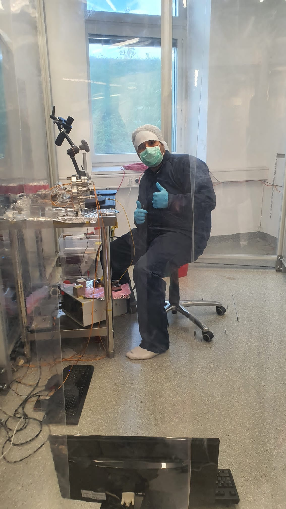

My academic journey began with a fascination for optics and quantum mechanics during my bachelor's studies, where I designed a Michelson interferometer as my first step into experimental physics. This experience inspired me to pursue a master's degree in photonics, where I explored experimental laser physics and nonlinear optics. During my thesis, I designed and fabricated several types of fiber and bulk lasers, including a high-power 532 nm laser based on resonant second harmonic generation — published in the International Journal of Optics and Photonics.
I also broadened my experience by collaborating with Masih Daneshvari Hospital in Tehran, where I modeled brain tissue for the development of a tumor-treating fields (TTF) device. In 2023, I joined TU Wien as a PhD researcher and project assistant, contributing to CANNEX — a force-metrology experiment at the intersection of quantum mechanics and cosmology. This project explores dark energy, dark matter, and quantum gravity interactions, while also investigating Casimir forces and force gradients as windows into the quantum vacuum. Driven by curiosity and a passion for experimentation, I aim to bridge fundamental physics with innovative applications.
Inside the Clean Room
A look at our precision instrumentation lab where quantum force sensors are assembled and aligned. Working in full clean-room gear keeps dust and vibration at bay while we prepare Casimir force experiments.

Hamid Haghmoradi preparing the Casimir force interferometer inside the TU Wien clean room.
Quantum Force Metrology
Developing state-of-the-art experimental setups for precision measurement of Casimir forces using plane-parallel plate geometry and sub-nanometer interferometry.
Sub-nanometer resolution readout
Six-axis seismic isolation
Active thermal shielding (<0.3 mK)
Laser & Photonics
Expertise in fiber laser systems, nonlinear optics, and high-power laser design from M.Sc. research at Shahid Beheshti University.
Medical Physics
Applied computational modeling for tumor treating fields (TTF) therapy optimization using 3D MRI segmentation and dielectric modeling.
“The important thing is not to stop questioning. Curiosity has its own reason for existing.”
— Albert Einstein
Featured Work
Innovation in Action
“In physics, you don't have to go around making trouble for yourself. Nature does it for you.” — Frank Wilczek
Quantum PhysicsMetrologyCANNEX
CANNEX Project: Casimir Force Metrology
Co-developing a state-of-the-art experimental setup for precision measurement of Casimir forces with sub-nanometer interferometry and advanced seismic isolation.
“I have no special talent. I am only passionately curious.” — Albert Einstein
Whether you are exploring a new experiment, need help refining a measurement system, or want to co-author research, drop a note and I’ll respond within two business days.